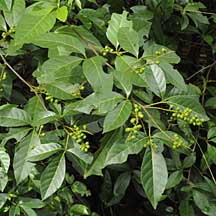
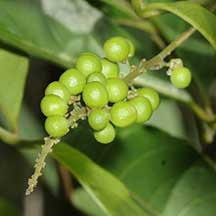
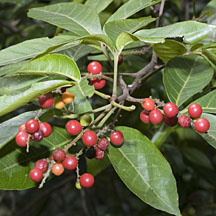
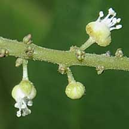
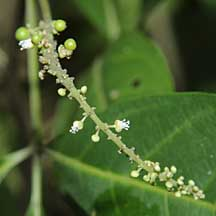
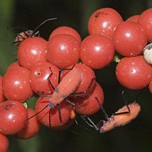
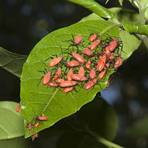
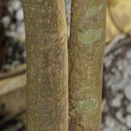

|
|
|
plants
text index | photo
index
|
| coastal plants |
| Tit-berry Allophylus cobbe Family Sapindaceae updated Jan 2013 Where seen? This pretty shrub with bright red fruits are sometimes seen in our back mangroves and sandy shores. According to Hsuan Keng, common along seashores including Kranji, Seletar and Jurong. Elsewhere, they are also found in secondary forest. Globally widely distributed from South America, South Africa through India to Southeast Asia and Papua New Guinea. Features: A shrub to tree (3-5m tall), sometimes a climber. Variable shape and growth form, Corners identified 5 varieties. Distinguished by leaf made up of three leaflets eye-shaped (4-9cm long), with a toothed edge, green that wither yellow. Flowers tiny (0.2cm) white many on a spike. Berries globular small (0.5cm), several clustered on a stem. These ripen orange or red and are fleshy. The seeds are dispersed by birds. According to the NParks Flora and Fauna website, it is the preferred local food plant for caterpillars of the moths, Cleora injectaria and Gonodontis clelia. According to Butterfly Circle, it is the host plant for Nacaduba pavana singapura. Human uses: According to Giesen, the wood is not considered of good quality and only used for roofing and sometimes as firewood. According to Selvan, the wood was used to make bows. The fruits are edible and according to Selvam, tastes "very sweet". The leaves are used as a mouthwash, to treat fractures, relieve rashes. The roots are used to treat diarrhoea. |
 Pulau Ubin, Oct 09  Sungei Buloh Wetland Reserve, Sep 09 |
|
 Kranji Nature Trail, Jan 13 |
 Sungei Buloh Wetland Reserve, Sep 09 |
 Sungei Buloh Wetland Reserve, Sep 09 |
|
 Nymphs of bugs seen on berries. Sungei Buloh Wetland Reserve, Mar 11 |
 Nymphs of bugs seen on leaves. Sungei Buloh Wetland Reserve, Mar 11 |
 Sungei Buloh Wetland Reserve, Sep 09 |
| Tit-berry on Singapore shores |
| Photos of Tit-berry for free download from wildsingapore flickr |
| Distribution in Singapore on this wildsingapore flickr map |
|
Links
References
|
|
|